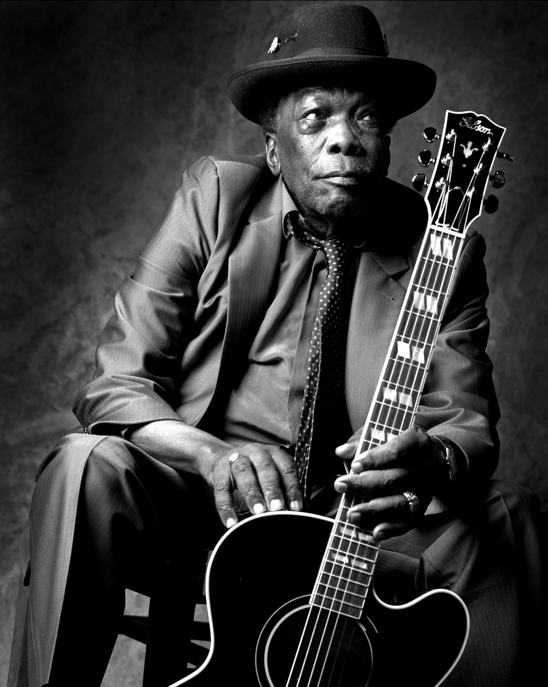
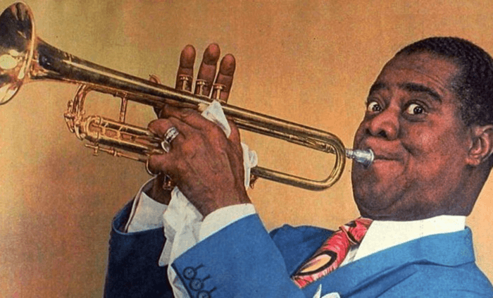
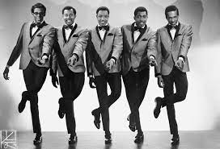
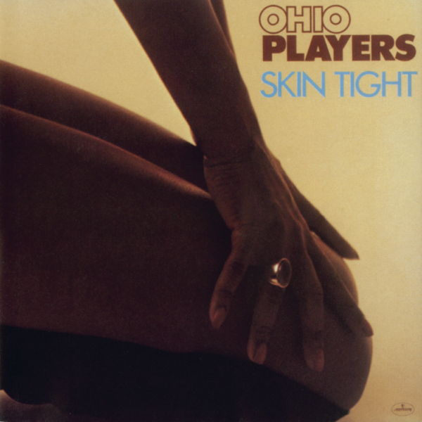

BLUES
Una colección de obras maestras de todos los estilos de Blues: desde las manifestaciones más tradicionales del Delta del Misisipi hasta el Blues Rock de los años setenta, pasando por el Folk Blues, el Blues eléctrico y el Rhythm and Blues.
JAZZ
En nuestra sección de Jazz vas a encontrar los mejores vinilos de Jazz de artistas clásicos del género (Louis Armstrong, Miles Davis, John Coltrane, Artie Shaw, Ella Fitzgerald, Billie Holiday, Thelonious Monk, Stan Getz, Ray Charles, Herbie Hancock).
SOUL
La música Soul tiene su origen en Estados Unidos en los primeros años de los 60, y surge de la combinación de elementos clásicos del Góspel, el Rhythm & Blues y el Doo-Wop. En esta sección podras encontrar los mejores clasicos para disfrutar de una velada a puro Soul.
FUNK
El término funk con su significado musical nació entre músicos, por lo que no resulta difícil deducir que empezó a ser empleado para definir a un músico que se entregaba sobre los escenarios y terminaba apestando con la ropa empapada en sudor. Entregate al sonido mas bailable que se creo de la mano de nuestra mejor seleccion de Funk.
Afro American Music